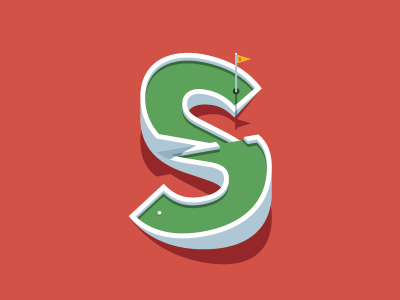
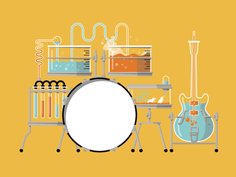
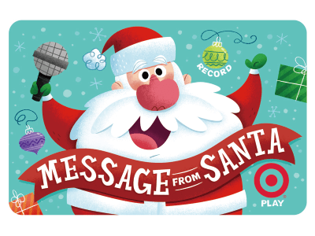
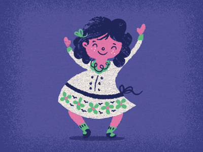
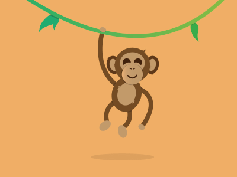
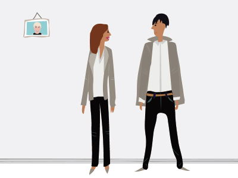
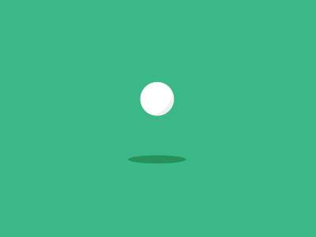
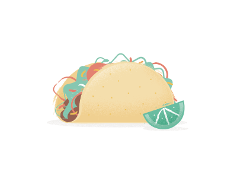
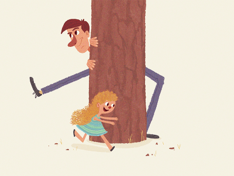
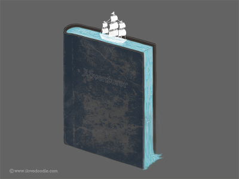

实例课程
关于Scratch
资料下载
关于我们
实例课程
我们根据对于亲少年的教育研究以及逻辑思维的一般培养过程，设计了三阶段12节的课程，分别对应入门，中级，高级。培养的能力包括循环逻辑，几何思维，场景想象能力等。
再为您的孩子教育的时候，我们会针对不同孩子的情况添加或者删减课程来更好的辅导孩子培养对应的编程以及逻辑的思维能力
Scratch 入门基础 （3节课）

1.名字一起动起来Name!
Scratch 入门基础: 基本逻辑，Scratch趣味图像基础.

2.创作音乐
Scratch 入门基础: 基本逻辑，Scratch 音效创建以及应用.

3.互动节日卡
Scratch 入门总结，综合运用趣味图像以及音效.
Scratch 中级进阶 （4节课）

4.来跳舞吧
Scratch 中级应用：多对象控制，培养条件控制逻辑.

5.我的虚拟宠物
Scratch 中级应用：多事件创建，基础循环逻辑培养.

6.时尚竞赛
Scratch 中级应用：熟悉角色的定位操作，场景效果应用，对应培养空间几何思维能力.
7.飞起来
Scratch 中级总结，综合运动循环逻辑，几何思维以及角色和场景的控制.
Scratch 高级辅导 （5节课）
8.一起赛跑
Scratch 高级应用：复杂事件的应用，初步介绍人工智能概念（可选择）.

9.回力球游戏
Scratch 高级应用：几何思维能力-角度的进阶学习.

10.接卷饼游戏
Scratch 高级应用：随机事件学习以及对应的逻辑能力的培养.

11.捉迷藏游戏
Scratch 高级应用：随机事件巩固 - 多对象的随机事件.

12.创作故事
Scratch 高级总结，培养孩子场景故事的想象能力.
如果您对我们的服务有兴趣或者有意合作，可以发邮件到
aidi_life@sina.com
, 或者通过下面的二维码来联系我们！
微信公众号
扫描二维码
 微信公众号扫描二维码
微信公众号扫描二维码